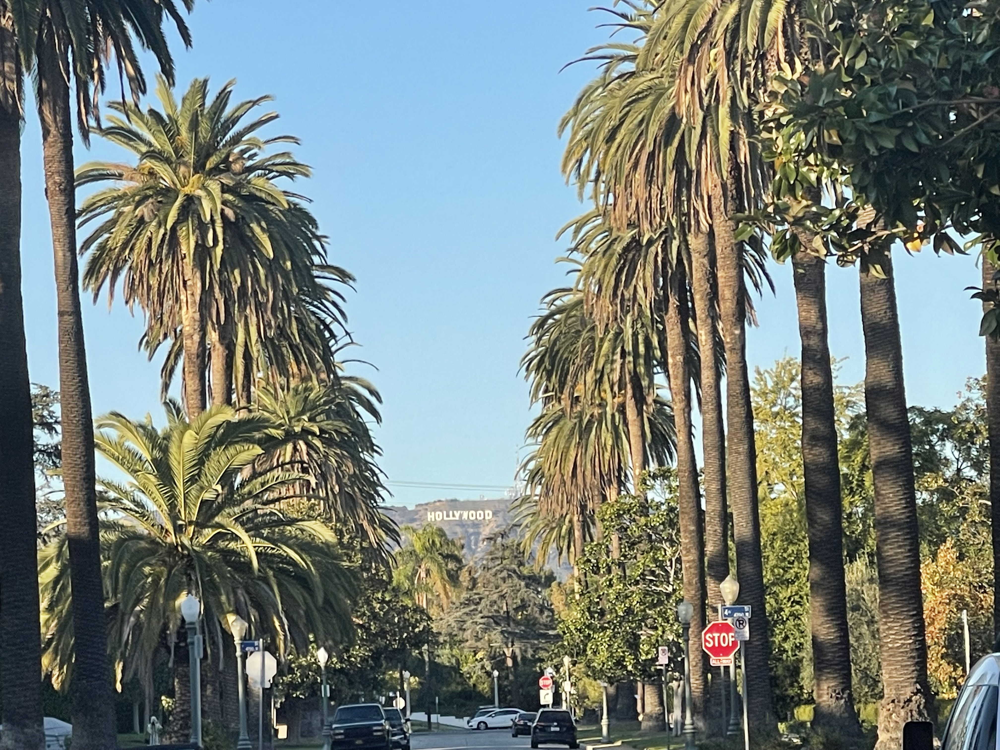
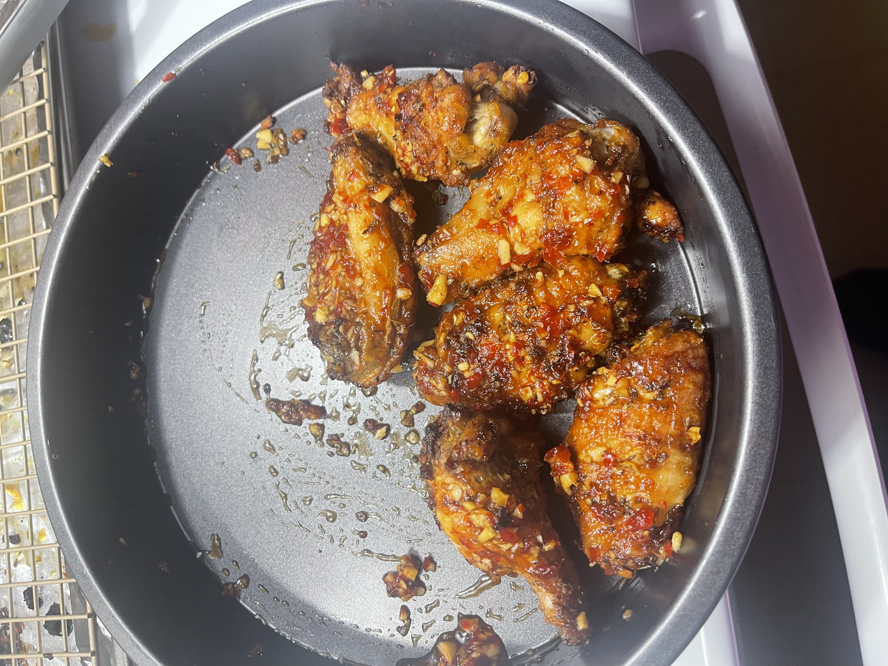
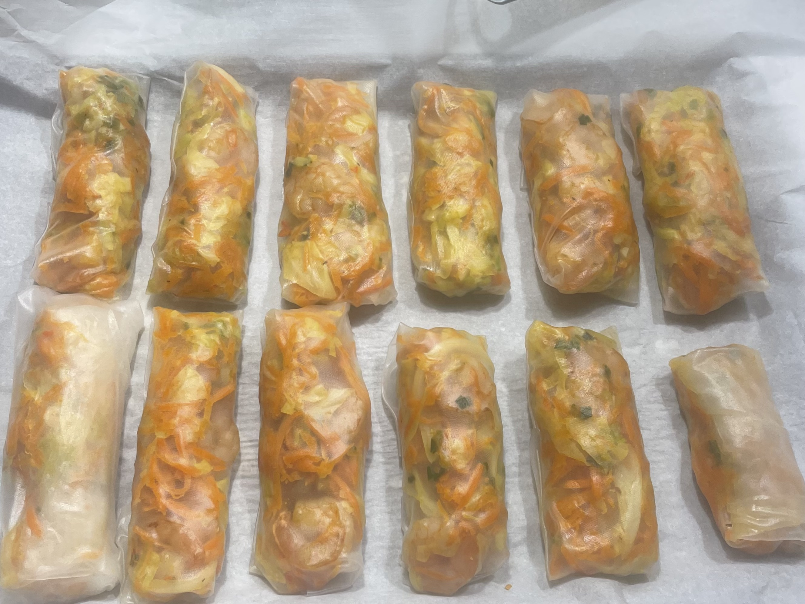
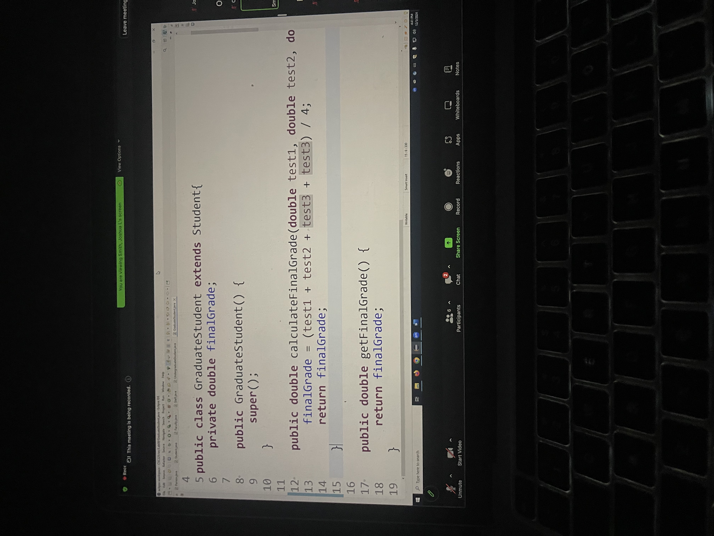
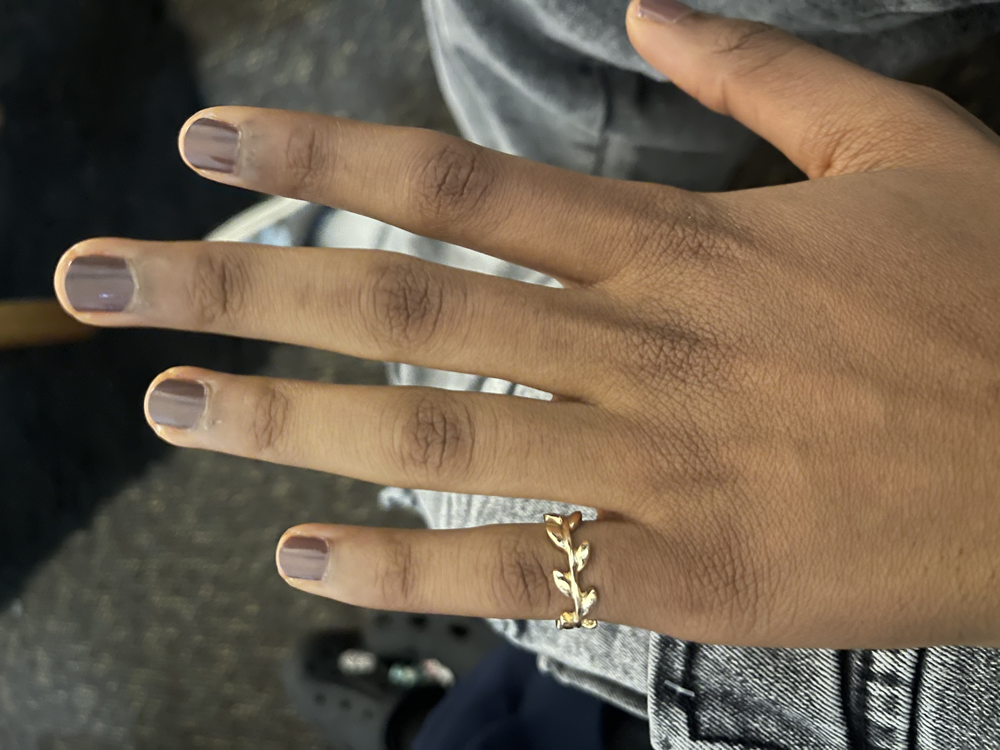
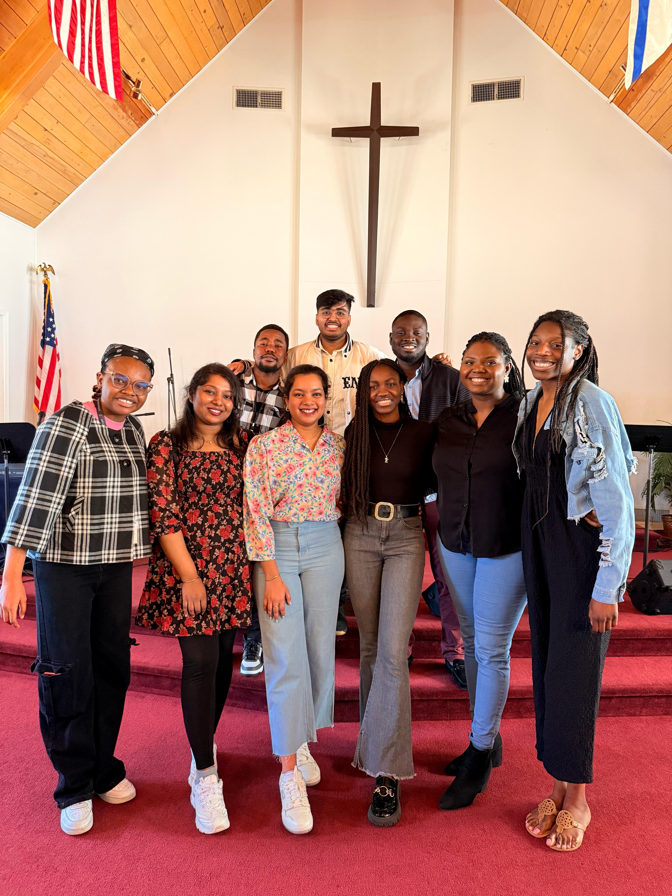
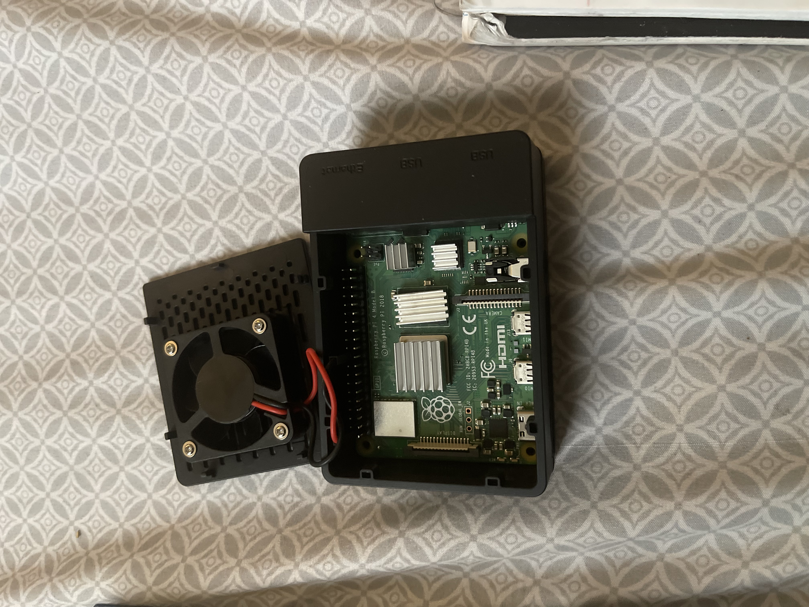
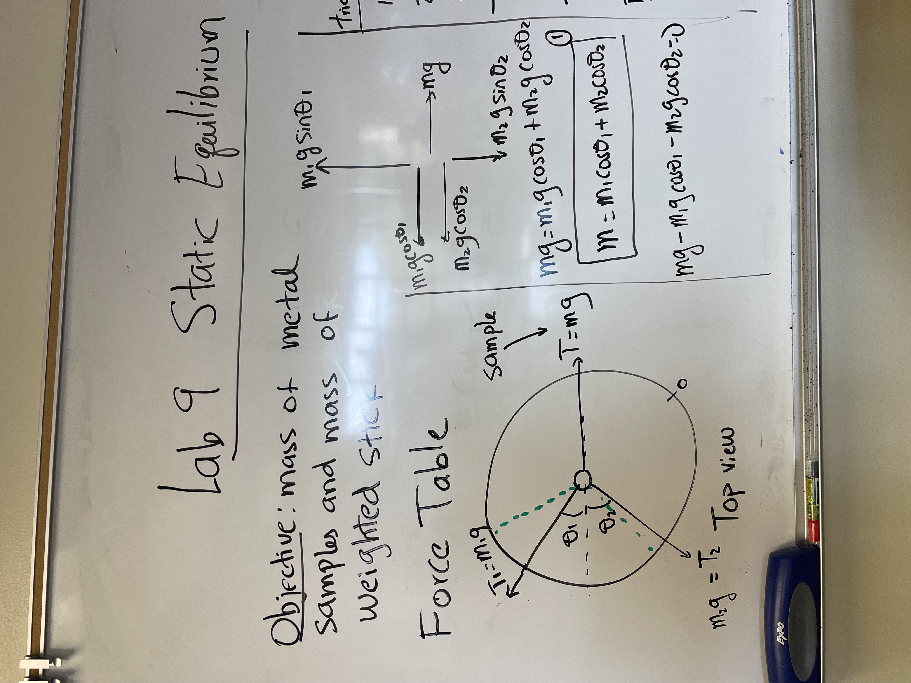
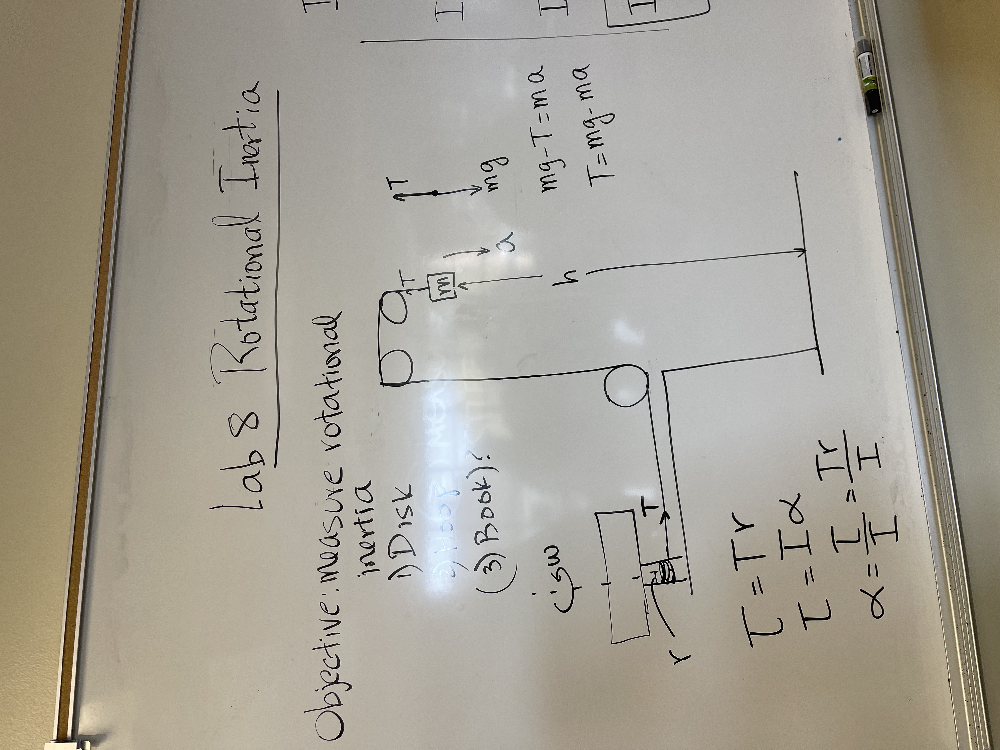

My first name is pronounced o(the way o in orange is pronounced)-mo(pronounced mo in mother)-wun(pronounced wou in would-mi(pronounced me).
A picture taken by my brother
Hi there 🖐🏽. My name is Omowunmi Kolawole and this is my portfolio website.
Keep scrolling to learn more about me. Have fun!
About Me
My name is Omowunmi, I am an International student from Nigeria and I am in the United States to earn an Undergraduate degree.
I grew up amongst 2 brothers and a younger sister with my mother and father. We lived in the Nigerian state of Lagos.
I attended high-school in Nigeria and graduated 2021 with my earned diploma.
Educational Background
I am a Computer science major at the University of Illinois, Springfield(UIS) and I'm set to graduate the fall of 26.
I am also a transfer student at UIS. I transferred from a community college in Oakland, California called Laney college.
I got an associates in Mathematics from Laney college and I came to Springfield as I had family and friends here.
My interests
I am a passionate and curious person with a wide range of interests. I love music and singing, and I often find joy in expressing myself through cooking and baking.
I’ve always enjoyed solving math problems, and that love for problem-solving has grown into a fascination with learning new, hands-on skills—especially those with real-world application, like coding, web design, nail care, and makeup techniques.
I also have a soft spot for sunsets; there’s something peaceful about capturing their beauty through photography. I’m always on the lookout for new hobbies to explore. Lately, I’ve been drawn to learning how to play the guitar and studying color theory.So I enrolled
for an intro to Guitar course and have mastered enough to play basic songs in front of a crowd. My faith plays a big role in my life.
I love going to church and spending time in prayer—it brings me deep peace and clarity. I also enjoy reading the Bible. To me, it’s not just a book but a collection of real stories from real people, and I find it meaningful to learn from their experiences and mistakes.
Career Prospects
Initially, my academic path focused on law, and I remain committed to the discipline and analytical thinking it requires.
However, my deep dive into computer science and mathematics has revealed a powerful passion for Data Science.
The web constantly generates vast amounts of data, creating an urgent and growing need for professionals who can effectively manage,
analyze, and store this information. This is where I want to focus my career. I am drawn to the blend of mathematical analysis and technical implementation that defines the field.
I have decided to dedicate my energy to mastering these skills through a Master's program in Data Science,
a path that allows me to satiate my desire to learn more about advanced data analytics and web technologies.
Snapshots of My Life
A sunset I captured

HOLLYWOOD sign captured by me

Spicy baked honey garlic chicken wings

Honey shrimp spring rolls in rice paperBaking Nigeria's local Agege Bread

Java coding project

Nail care and cleaning

At church with UIS ISF friends
Projects
Working on Robotics using the Raspbarry pi single board computer

Raspberry pi single board computerRaspberry pi's OS(Operating System)
During my first semester at Laney College, I took an introductory computer science course where we were expected to explore the Raspberry Pi's operating environment — with very little instruction from the professor.
As a newcomer to both the school and the system, I was shocked to learn that our midterm and final projects depended entirely on our ability to build something functional using the Raspberry Pi — independently. I had to figure out everything from assembling the device to writing the software that would run on it.
To get started, I turned to YouTube tutorials and joined a Discord group created by other students in the class to share resources and advice — both of which proved incredibly helpful. On top of that, I had to teach myself the Python programming language from scratch, all within about three months.
After many sleepless nights and countless videos, I was able to create a game using Python in the Raspberry Pi environment. It was one of the most challenging semesters I’ve experienced, and one I’ll never forget.
This Raspberry Pi project demonstrated my ability to apply Python to real-world hardware challenges. While the physical device and source code were unfortunately lost during a recent move,
I have documented the build process and key code components with images. This experience taught me a crucial lesson about redundant data backup strategies, which I am now applying to all my current development work."
The most helful website for this project: The Raspberry pi's official website. It has a lot of information and resources that are beginner friendly.
Working with jupyter notebooks
In Summer 2023, I took a 5-unit class called CIS 61: Structure and Interpretation of Computer Programs. Out of all my college courses so far, this class had the most profound impact on my technical understanding of computer programming.
What stood out wasn’t just the content, but also the instructor’s engaging and unconventional teaching style. She had a fun habit of starting each class by encouraging students to explore anime and manga, which created a light, interactive atmosphere that many students — myself included — enjoyed.
Beyond the fun, the class deeply explored the foundational concepts of programming. We discussed the similarities across different programming paradigms, including functional, structured, and object-oriented programming.
We also covered key programming language principles and data structures, focusing especially on how these structures operate in Python using Jupyter Notebooks and pre-configured GitHub repositories.
Through this class, I learnt how to use jupyter notebooks and it prepared me to go into coding in C, C++ and Java.
This project allowed me to master the use of Jupyter Notebooks for data analysis and visualization. I gained foundational skills in processing data sets and creating reproducible reports. This work was a key factor in choosing my intended Master's program.
You can view the full code and output directly on my GitHub repository.
Physics with calculus labs
I chose to take Physics with Calculus as a personal challenge. It was not a requirement for my major or minor,
but I was motivated to step outside my comfort zone and engage with a subject I had never formally studied
This Physics with Calculus class was one of the most intellectually demanding challenges I have undertaken.
While the subject matter was difficult and stretched my problem-solving limits in a completely new domain,
I learned great lessons in resilience, the importance of seeking help from peers and mentors, and
effective time management under extreme pressure. This course proved to me that I can face and learn from complex,
unfamiliar challenges, a skill that is essential in web development.

Physics lab on Static Equilibrium

Physics lab on Rotational Inertia
Mastering Data Structures Across Languages (C++ to Java)
After transferring from my 2-year college, I faced a significant technical challenge.
My new university's computer science curriculum was taught exclusively in Java, while my foundational coursework—including Data Structures—had been completed in C and C++.
This required me to learn Java from scratch and immediately apply it to complex topics.
I essentially had to re-learn Data Structures, implementing concepts like Linked Lists, Trees,
and Hash Maps in an entirely new object-oriented environment.
While the syntax and memory models were very different, the core concepts were the same.
This process was invaluable. It forced me to separate the fundamental theory of data structures
from the implementation of one language. I successfully made the transition, deepened my understanding
of both C++ and Java, and proved to myself that I can quickly adapt and master new technologies. It was in this process that I learned to
use github in saving and sharing files across a workspace.
Skills
Technical Skills
Proficient in Microsoft Word, Excel and Powerpoint
Experience in Python (Jupyter Notebook, Raspberry Pi)
 A picture taken by my brother
A picture taken by my brother